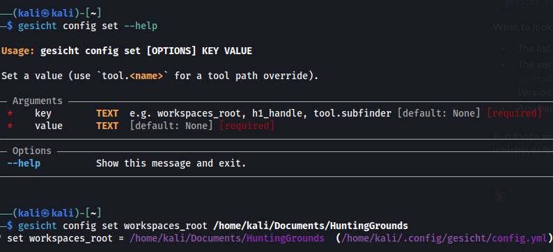
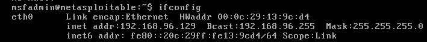
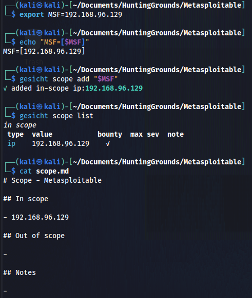
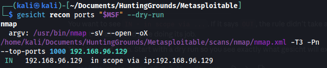
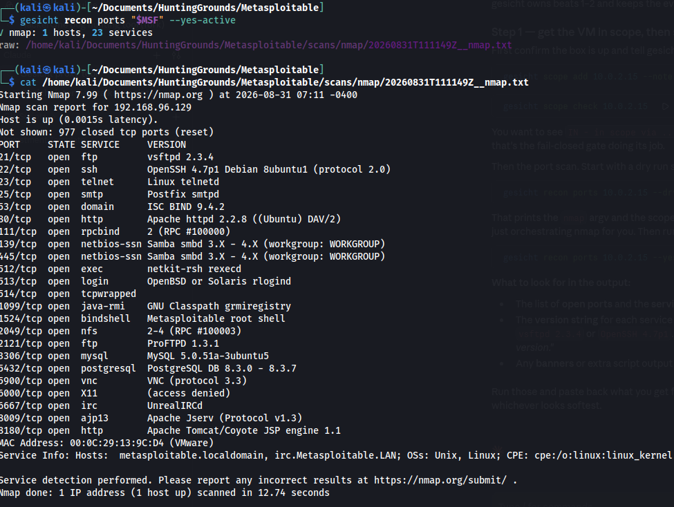
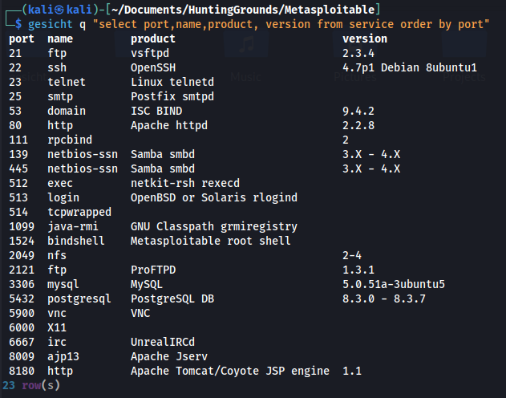

1. Configure the Gesicht's root
This step is optional. If you skip it, Gesicht defaults to
/home/gesicht. For this example, we set workspaces_root
to HuntingGrounds (This can be any folder you wish!). The setting is written to
~/.config/gesicht/config.yml.

gesicht config set workspaces_root <path> — any
key can be overridden this way, including tool paths like
tool.subfinder.
2. Create the folders
gesicht init (desired folder name) scaffolds a new workspace
under the root folder you just set and selects it as the active one, so later commands
know which engagement they belong to.

.../HuntingGrounds/Metasploitable and marked as
selected.
3. The workspace layout
Listing the new directory shows the structure Gesicht lays down:
folders for recon, scans,
findings, reports, loot,
exploits and content, plus a
scope.md, a notes.md and a
README.md.

4. Find the target's IP
Run on the target VM itself, ifconfig gives the address
we will put in scope — 192.168.96.129.

eth0 address.5. Define the scope
scope list shows
what is in and out of scope, and scope.md is kept in sync
as a human-readable record. Every active command checks this before it
touches a target.

6. Preview the recon command
gesicht recon ports "$MSF" --dry-run prints the exact
nmap invocation Gesicht would run — the full
argv, the output path, and the scope decision — without
running anything. Gesicht is orchestrating nmap, not replacing it.

7. Run the port scan
--yes-active authorises the real scan. Gesicht runs nmap,
parses the results into the database (1 host, 23 services),
and keeps the raw output under scans/nmap/ so nothing is
lost.

8. Gesicht's SQL Tables
Using SQL queries you can extract the data Gesicht has collected in any way you want.

gesicht q --tables lists the tables Gesicht writes to. All recon and scan results land here.
we can recreate the nmap output by querying the service table.

9. Vulnerability scan
Gesicht is able to use nuclei to scan for vulnerabilities. Hits are automatically turned into editable draft findings

gesicht scan nuclei "$MSF" --yes-active runs nuclei
against the in-scope target.
10. Viewing the scan results
gesicht finding ls shows every finding with its id,
severity, status, title and target.

11. Read a single finding
Gesicht automatically drafts a report for each finding, with a summary, impact, mitigation and references. You can edit these sections before you publish the report.

12. Jot that down!
gesicht notes add appends whatever you put after add to the
workspace's running notes. -t idea tags it, so notes can
be grouped later.

13. Read the notes back
gesicht notes show renders notes.md, newest
entry first, grouped by day with the time and any tags.

14. Check the workspace status
gesicht status gives the one-screen summary: which
workspace is active, the scope count, and how many hosts, services,
URLs, params, vulns, findings and tool runs are on record.

gesicht status gives the workspace summary